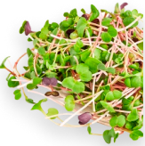
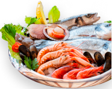
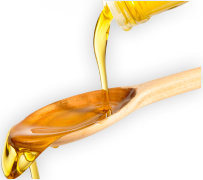
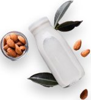
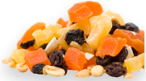
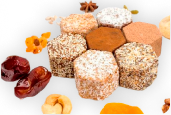

Поможем легко
и естественно
перейти на полноЦЕННОЕ питание
Сервис подписки на живые органические продукты с индивидуальной поддержкой нутрициолога
Попробовать сейчас
Чудесная жизнь — это
Разнообразные сезонные продукты
Мы обеспечим Вас самыми разными овощами, фруктами, зеленью и суперфудами, которые содержат максимум полезных веществ и витаминов.
Индивидуальная эксклюзивная доставка
Продукты изготавливаются небольшими партиями специально для наших клиентов и от стадии производства до Вашего стола проходит несколько часов.
Абонемент здорового питания
Каждую неделю Вы гарантированно получаете корзину со свежими разнообразными продуктами, подобранными нутрициологом.
Поддержка нутрициолога
Вместе с Вами мы составим разнообразное сбалансированное меню; выявим и устраним причины, которые мешают прийти к образу жизни Вашей мечты.
Как изменится ваша жизнь
На Вашей кухне всегда будут вкусные, свежие и полезные продукты высокого качества, которые сложно найти в простых супермаркетах.
Вам не прийдется тратить время и усилия на поиски качественных продуктов и составление полноценного рациона, появится больше ресурса для важных и интересных дел.
Вы научитесь готовить без особых усилий вкусные и интересные блюда с пользой для здоровья.
Улучшится состояние кожи и волос, Ваш организм омолодится и это станет заметно не только Вам.
Ваше потребление еды сократится: при здоровом питании организм быстрее насыщается нужными элементами.
Повысится иммунитет, появится больше энергии и жизненного тонуса. Вы научитесь самостоятельно читать сигналы своего тела и невелировать стрессы.
Хотите перейти на живое питание, но не знаете где и какие продукты покупать и как их лучше готовить?
Мы - не просто оффлайн магазин, а полноценный партнёр, сопровождающий Вас на пути к новой качественной жизни.
Юлия Чудесная
Основатель Чудесной жизни
Продукты, выращенные и произведённые на загрязненных территориях с использованием пестицидов, гербицидов и других химических веществ, могут нанести вред здоровью человека. Но именно они чаще всего лежат на полках супермаркетов. И тем, кто хочет питаться правильно, приходится тратить много времени и сил на поиск свежих фруктов и овощей, растительных масел, полезного хлеба, безопасных круп, орехов, сухофруктов и других органических продуктов, сохранивших свои полезные свойства.
Я нашла лучшее решение из возможных - составить корзины свежайших, натуральных и безопасных продуктов, которые регулярно будут доставлены Вам домой. Ваше меню станет сбалансированным: в нем будут микро- и макронутриенты, витамины, аминокислоты и жиры, необходимые Вашему организму. После персональной консультации Вы получите рацион, который обеспечит Ваш организм полноценным питанием, а так же поможет решить многие задачи со здоровьем без врачей и таблеток.
Составляя ассортимент экомаркета «Чудесная жизнь», большое внимание уделяется поставщикам, чистоте, экологичности и качеству продуктов, ведь я должна быть абсолютно уверена в максимальной пользе каждого продукта. Поэтому большинство из наших товаров нельзя найти на полках магазинов, их срок хранения естественный и многие продукты попадают к Вам на стол практически сразу после изготовления или сбора.

Как это работает
Диагностика
питания и стиля жизни
Консультация нутрициолога
Доставка продуктов
Питаетесь и меняетесь
Прямо сейчас дарим Вам подборку авторских полезных рецептов от Юлии Чудесной
Забрать бесплатноКакие продукты входят
микрозелень 
морепродукты 
сыродавленные масла 
молочная
продукция 
сухофрукты 
десерты 

Что получает человек, питаясь органическими продуктами
-
Энергию для реализации всех своих «хочу» и «надо»
-
Омоложение организма
-
Хороший сон
-
Освобождение от лишнего веса
-
Чистую и упругую кожу, блестящие волосы
-
Очищение организма от токсинов и свободных радикалов
-
Избавление от воспалений
-
Жизнь без врачей и аптек
Тарифы на подписку
По статистике 60% жителей Москвы тратят в месяц на еду от 30 тысяч рублей только на одного человека, а это значит, что для перехода на новый качественный уровень жизни Вам не потребуются дополнительные ресурсы. Плюс у Вас всегда будет поддержка в лице дипломированного нутрициолога!
Кроме того, с подпиской Вы:
- Получаете свежие органические продукты со скидкой до 15%
- Не тратите время на выбор продуктов и оформление заказов
- Всегда уверены в качестве, свежести и пользе того, что едите Вы и Ваша семья
- Имеете возможность корректировать корзину
Базовый
Еженедельная корзина полезных продуктов
Количество месяцев
На одного
На двоих
На троих
На четверых
1 месяц
22 000 ₽
43 000 ₽
43 000 ₽
43 000 ₽
Расширенный
Одна консультация нутрициолога и еженедельные индивидуально подобранные продуктовые корзины
Количество месяцев
На одного
На двоих
На троих
На четверых
1 месяц
25 000 ₽
48 000 ₽
72 000 ₽
93 000 ₽
Премиум
Ведение нутрициолога (4 раза в месяц) и еженедельные индивидуально подобранные продуктовые корзины
Количество месяцев
На одного
На двоих
На троих
На четверых
1 месяц
32 000 ₽
59 000 ₽
88 000 ₽
115 000 ₽
Примеры продуктовых корзин
Наши продуктовые корзины закрывают базовые потребности организма в микро- и макронутриентах. Их состав будет варьироваться в зависимости от сезонности и Ваших индивидуальных предпочтений. Наша главная задача — сделать Ваш рацион вкусным и разнообразным, помочь Вам изменить образ жизни и сформировать новые полезные привычки.
Ростковый салат «Жизнь»
Ростковый салат
«Свежесть плюс»
Авокадо хасс Премиум
(PER) - 3 шт.
Минтай филе
порционное, 1 кг
Хлеб Изобилие
Зелень (сезонная), 300 гр.
Фрукты (сезонные), 2 кг
Овощи (сезонные), 3 кг
Рис бурый, 500 гр
Соль красная,
Гималайская, 500 гр.
Аква салат, 250 гр
Йогурт кокосовый
Сыродавленное масло,
горчичное
Аква салат + ростки
«Итальянский»
Ростковый салат
«Живая энергия»
Авокадо хасс Премиум
(PER) - 4 шт.
Черная треска (угольная),
600 гр.
Хлебцы живые льняные
Зелень (сезонная), 300 гр.
Фрукты (сезонные), 2 кг
Овощи (сезонные), 3 кг
Пшено, 500 гр.
Корица индонезийская
в палочках, 50гр
Грецкий орех, 250 гр.
Чернослив, 250 гр.
Сыродавленное масло,
рыжиковое
Ростковый салат «Здоровье»
Ростковый салат
«Здоровье плюс»
Авокадо хасс Премиум
(PER) - 4 шт.
Нерка стейк, 600 гр.
Хлеб Радость
Зелень (сезонная), 300 гр.
Фрукты (сезонные), 2 кг
Овощи (сезонные), 3 кг
Зеленая гречка
Смесь специй Карри,
органик
Аква салат, 250 гр
Йогурт миндальный
Сыродавленое масло
льняное, коричневый
Ростковый салат «Свежесть»
Ростковый салат
«Жизнь плюс»
Авокадо хасс Премиум
(PER) - 3 шт.
Креветки королевские, 500 гр.
Хлеб Здоровье
Зелень (сезонная), 300 гр.
Фрукты (сезонные), 2 кг
Овощи (сезонные), 3 кг
Квашеная капуста, 600гр.
Пропаренная гречка
Приправа для салатов
и овощей
Аква салат, 250 гр.
Творожок из зеленой гречки
Сыродавленное масло,
подсолнечное
Юлия — ваш личный нутрициолог
Я сама прошла путь от неосознанного питания к чистым продуктам и здоровому, сбалансированному рациону. В 50 появилось желание оставаться молодой, здоровой и энергичной. На этот запрос в мою жизнь пришли знания, учителя и единомышленники и теперь я точно знаю, что можно не только остановить старение, но и обернуть время вспять через питание и образ жизни.
Моя основная профессия пищевого технолога и многолетний опыт управления послужили отличным фундаментом для углубленного изучения тем питания, оздоровления, долголетия, физической и ментальной молодости и на сегодня я так же являюсь:
- дипломированным привентивным нутрициологом;
- членом Ассоциации нутрициологов и коучей по здоровью;
- мастером Access Bars, МАК-карт и то, чем я горжусь больше всего, основателем экомаркета и витальной философии «Чудесная жизнь».

Вместе мы изменим не только питание, но и укрепим основу нового (осознанного) образа жизни:

Я познакомлю Вас с механизмами работы вашего организма
Я расскажу, почему важно вводить в рацион те или иные продукты
Я составлю персональную корзину сезонных продуктов для Вас и Вашей семьи
Я помогу легко пройти период адаптации и перестроиться на качественное питание
Я поделюсь лайфхаками для здорового и энергичного образа жизни